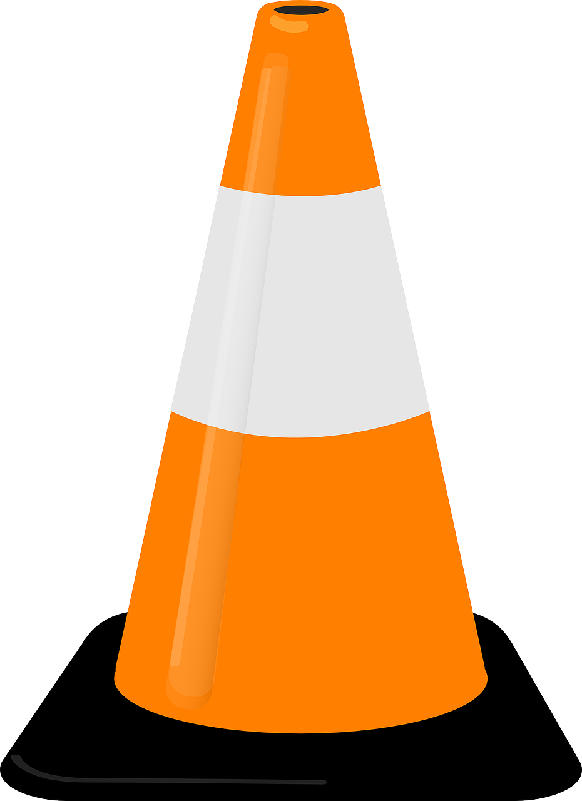

Les demandes pour des cours de mathématiques constituent la majorité de nos demandes prospect, répondre à leur besoin requière de solides connaissances sur notre offre de formations.
Objectif
Améliorer son taux de vente sur les formations en mathématiques proposées par notre organisme
- Avant notre rencontre en présentiel, veuillez consulter les documnents suivants
- A la suite de notre séance en présentiel, je vous invite à revoir cette présentation pour vous remémorer des chiffres importants.
- Lien vers la présentation vue en présentiel
- Pour continuer à pratiquer à la suite de votre formation
En cours de création
